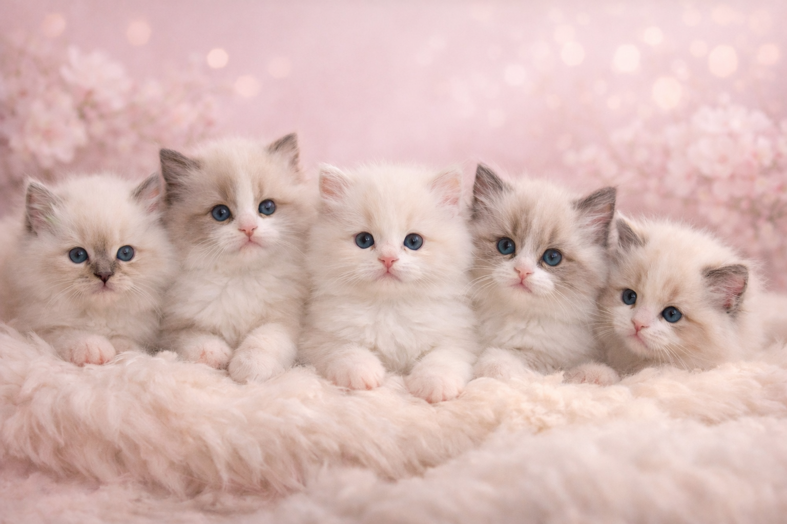

Akwamaryn*PL
To miejsce stworzone z miłości do kotów, piękna rasy i codziennej bliskości z tymi wyjątkowymi zwierzętami. W hodowli Akwamaryn*PL łączymy pasję, troskę, estetykę oraz odpowiedzialne podejście do zdrowia i odchowu.
O nas
Pasja, która dojrzewała przez lata
Cześć, mam na imię Agnieszka i to właśnie z ogromnej miłości do kotów powstała hodowla Akwamaryn*PL. Koty były obecne w moim życiu od dziecka. Zawsze były mi bliskie – ich delikatność, inteligencja, niezależność i to niezwykłe ciepło, które wnoszą do domu, sprawiały, że od najmłodszych lat czułam, że są częścią mojego świata.
Z czasem ta dziecięca miłość przerodziła się w coś znacznie głębszego – w świadomą pasję, potrzebę tworzenia miejsca wyjątkowego, pełnego troski, piękna i odpowiedzialności. Tak narodził się Akwamaryn*PL – hodowla, w której nie chodzi tylko o samą rasę, ale przede wszystkim o serce, charakter, zdrowie i bliskość.
Chciałam stworzyć przestrzeń, w której koty będą dorastały w domowej atmosferze, z czułością, spokojem i kontaktem z człowiekiem od pierwszych dni życia. Miejsce, w którym każde kocię jest ważne, zauważone, zaopiekowane i przygotowane do życia w kochającym domu.
Moja historia
Dlaczego właśnie koty i dlaczego właśnie hodowla
Dla mnie kot to nie tylko zwierzę. To obecność, emocja, codzienność i wyjątkowa więź, której nie da się niczym zastąpić. Koty uczą delikatności, cierpliwości, uważności i tego, że prawdziwa relacja buduje się spokojem, zaufaniem i sercem.
Decyzja o stworzeniu hodowli nie była przypadkiem. To był naturalny krok wynikający z lat obserwacji, fascynacji rasą, zachwytem nad ich urodą i charakterem oraz potrzeby tworzenia czegoś pięknego i prawdziwego. Chciałam, aby z mojej hodowli wychodziły kocięta nie tylko śliczne, ale przede wszystkim dobrze prowadzone, socjalizowane i kochane od pierwszych dni.
Akwamaryn*PL to nie jest dla mnie tylko nazwa. To kawałek mojego serca, codzienna praca, emocje, wzruszenia, piękne chwile i ogromna odpowiedzialność. To miejsce, w którym każda linia, każde skojarzenie i każde kocię ma znaczenie. I właśnie dlatego ta hodowla jest dla mnie tak ważna.
Rejestracje
Przynależność i potwierdzenie jakości hodowli
WCF
World Cat Federation

SKR
Stowarzyszenie Koty Rasowe
Kontakt
Zapraszamy do kontaktu z hodowlą Akwamaryn*PL